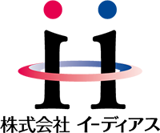

コンサルティング×
クリエイティブ×情報力
人事が抱える課題に対して、総合的な解決手段を提示することが私たちのサービスです。 潜在的な真の課題を見つけ出し、その解決策となる情報を最適な形でお届けします。 最適な解はコンサルティングとクリエイティブ、そして情報力を持って生み出されます。
採用における課題を「情報発信」で解決する - ii-deais（イーディアス） -
株式会社イーディアス ホーム > イーディアスについて



私たちは、日本全国の人事担当者が抱えるさまざまな課題に対して、
その解決の一助となる「最適な出会い」を創造します。
情報・人材・仕組みと出会うことによって、日本の企業が発展すること、
そして活力ある社会が実現することがイーディアスの願いです。
人事は「人材」に関するあらゆる業務を扱い、抱える課題の範囲も広く複雑です。
さらに、企業の規模や業種、将来のビジョンといった複数の要因でその課題は変化します。
企業独自の課題を解決するため、どんな知識が必要でしょうか。どのくらい時間をかけられるのでしょうか。
私たちが目指すのは「人事向け総合サービス会社」です。
数々の企業の採用課題を解決した実績と、フリーペーパーの制作で培った人脈と事例・情報によって、
人事の悩みや課題に対し最適な解を導き出します。
人事担当者へ、情報との最適な出会いを提供することが、私たちイーディアスの仕事です。


イーディアスは人事の皆様との共創によって提供価値を高めていきます。

人事が抱える課題に対して、総合的な解決手段を提示することが私たちのサービスです。 潜在的な真の課題を見つけ出し、その解決策となる情報を最適な形でお届けします。 最適な解はコンサルティングとクリエイティブ、そして情報力を持って生み出されます。
企業によって人材の課題は異なるため、人事が抱える課題の解決策も異なります。 その解決策が何かという気付きを与え、真に必要な情報やサービスを提供し、膨大な人事の業務を仕組化して効率化すること。それが私たちイーディアスの使命です。

企業へのコンサルティングや取材で獲得した知識をサービスとして提供します。 課題解決により得た情報は、さらに他の人事が活用できる知識として提供。 この人事とともにつくるサイクルこそが、イーディアスが目指す知のオープン化と共創です。

 人と人をつなぐ、人事のための総合メディア＠人事
人と人をつなぐ、人事のための総合メディア＠人事
「情報」と出会う 〜人事が必要とする情報発信〜
フリーペーパー＆Webサイト「＠人事」は、人事担当者が知りたい情報を知りたいときに手に入れられるよう、具体的な施策やナレッジを集約させた、新しいメディアです。旬なニュースをはじめ、他社の成功事例や人事担当者のスキルアップ術、魅力的な人事向けサービスといった有益な情報を人事担当者にお届けします。

人事担当者に役立つ情報を集めたフリーペーパーです。 企業の成功事例や人事担当者の対談、著名人のコラムなどを掲載しています。

フリーペーパーと同様に、人事に役立つ情報を発信します。 配信記事だけでなく、＠人事が主催するセミナー受講や講師募集への応募、サービスへの問い合わせが可能です。

＠人事と提携する、人事向けのサービスを提供する会社を一覧で掲載しています。 あらゆるサービスを網羅し、選び方や利用方法もご相談いただけます。
＠人事では、年に4回セミナーと交流会を開催しています。 実施セミナーは＠人事ポータルサイトで動画配信し、編集したDVDの販売も行います。
「仕組み」と出会う 〜採用課題解決のための仕組みづくり〜
人事の業務領域の中で大きな割合を占める「採用」に特化したサービスです。 イーディアスの採用コンサルタントがクライアントのパートナーとなり、年間単位で最適な採用活動をサポートするサービスです。
ホスピタリティと状況判断力をもって、採用の判断を除くすべて、または一部の業務を代行し、担当者が中核業務に集中できるよう支援します。
イーディアスがこれまでのコンサルティング経験や人事向け情報誌の制作で獲得した、各社の状況と成功事例をご提供します。
コンサルティングによる深い理解に基づいて採用ツールを制作するため、企業の価値や魅力を正確に伝えられ、効率とクオリティも両立できます。
イーディアスが多くの成功事例から得た採用活動の「仕組み」を利用することで、経験や知識がなくとも運用できるよう支援します。
データやテンプレートの整理、アウトソース活用などで業務の省力化・効率化を図り、"採用担当者しかできないこと"に集中できる環境をご用意します。
定期訪問によって企業の細かな変化を読み取り、"想定外の出来事"があっても、迅速かつ柔軟に次の策を講じます。
採用コンサルティングについて詳しくはこちら「サービス」と出会う 〜人事が必要とするサービスの紹介〜
イーディアスが「＠人事」の制作を通じて出会った、「人事に役立つ」サービスを提供する会社との橋渡しを行います。 人事と情報との出会いを創造すること。 どのサービスを利用したらいいか、自分たちでやるべき範囲はどこか、などの相談に応じ、人事担当者の省力化と効率化を支援します。